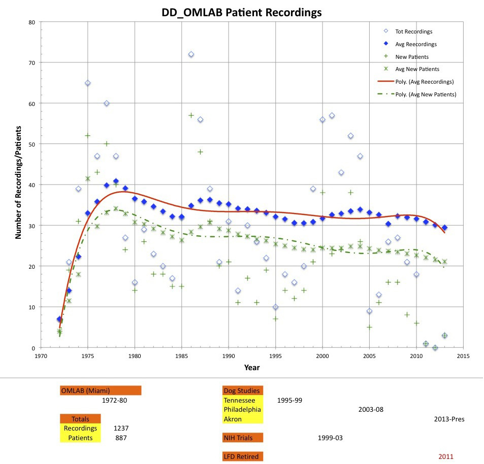

|
The software and models listed here were originally written in MATLAB 5.2.x and Simulink 2.x, under Mac OS 9. The software (but not the models) has been tested in MATLAB 6 and 7 under Mac OS X, and no "show stoppers" have been found. There may be some cosmetic issues, or MATLAB/Simulink may respond with a flurry of non-fatal warnings. Type "warning off" at the command line to suppress them. These files have been compressed using the .zip format. They can be opened using StuffIt Expander, or any other archiving package that supports this format.OMLAB 'OMtools' Software: 'OMtools' is a set of programs (m-files) and figures, arranged in heirarchical folders (directories), that were written to aid in ocular motor data retrieval, analysis, and display. NOTE: Some programs require the MATLAB Signal Processing Toolbox. For questions regarding the use of (or problems -- unpossible! -- with) specific m-files, email Dr. Jacobs at jxj24 (at) case (dot) edu. Last update: 11/23/15 Download OMtools Download previous version of OMtools The eXpanded Nystagmus Acuity Function (NAFX) is a fuction that uses relevant nystagmus parameters to predict the best possible visual acuity for a given set of nystagmus data based on the presumption that no afferent deficits are present. To the extent that the latter are present, the measured acuity will fall below the potential acuity. Once both acuity and nystagmus data are measured, the NAFX can also be used to estimate the improvement in measured acuity subsequent to therapy. The NAFX can now be used for biplanar data.
OMLAB OMS Models:
Top of page  DD_OMLAB Eye-Movement Database: Begining in 1986, most data from approximately 722 recording sesions were simultaneously taken digitally and the data files from those sessions compose a valuable storehouse of research data. Those data are now being made available to all researchers, residents, fellows, and students of ocular motility along with the software tools (OMtools) necessary for their display and analysis. The data and their analysis will hopefully allow those unable to actually record the eye movements of affected individuals to test hypotheses and conduct future ocular motor research into nystagmus. Citation: Should any data from the DD_OMLAB Eye-Movement Database be used in a publication, the relevant DD_OMLAB S #'s should be listed and the citation should contain a link to this page. All data have been de-identified in accordance with current research practices to protect the privacy of each person recorded. The digitized, de-identified human eye-movment DD_OMLAB data available for downloading from this page is divided into four parts: 1) data in published papers from 2002 - 2014; 2) all data, published and unpublished, recorded from 1986 to 2013; 3) data recorded in 1984 in the laboratory of Dr. R.M. Steinman, from S001; and 4) data recorded in 1993 in the laboratory of Dr. H. Collewijn from a human with achiasma, INS and SSN. NOTE: Digitized canine data may be found on the [COMLAB] page. For a detailed tutorial on recording and analyzing eye-movement data from subjects with nystagmus or other ocular motor disorders, see OMLAB Report #011005 (HTML) (PDF) For a detailed tutorial on the use of the NAFX, see OMLAB Report #111005 (HTML) (PDF) NOTE: NAFX is part of the 'OMtools' distribution, available through the above link. Some programs require the MATLAB Signal Processing Toolbox. For questions regarding the use or analysis of these data, email Dr. Dell'Osso at lfd (at) case (dot) edu. NOTE: All data files have been compressed using the .zip format. They can be opened using StuffIt Expander, or any other archiving package that supports this format. HINT: Many data files are large, despite having been compressed. It is recommended that downloading only be attempted using a high-speed wi-fi connection and during off-peak hours. Those interested in obtaining the whole human eye-movement database (>1.6 GB) should contact Dr. Dell'Osso and request a DVD. Top of page 1. DD_OMLAB data in published papers (2002 - 2014) may be downloaded from each of the numbered papers listed below. The following are deidentified, downloadable copies of human subjects' digitized eye-movement data from papers published in refereed scientific journals. The criteria required for these data are: 1) all the data were collected in OMLAB; 2) our calibrated eye-movement systems were used; 3) our nystagmus paradigms were followed; and 4) the patient's privacy would not be compromised by release of the data.The subject numbers identifying each data set are consistent with those in their respective published paper. PDF's of each paper may be downloaded from (Downloadable PDF's) The 'Deidentified Human Research Data' document correlates the published S #'s with the DD_OMLAB Subject #'s, thereby allowing additional data from each published Subject # to be downloaded.
Paper 116: Averbuch-Helller, L., Dell'Osso, L.F., Leigh, R.J., Jacobs, J.B., and Stahl, J.S.: The Torsional Component of ''Horizontal'' Congenital Nystagmus. J. Neuro-Ophthalmol. 22:22-32, 2002.
Paper 119: Kim, J.I., Dell'Osso, L.F., and Traboulsi, E.: Latent Nystagmus and Uniocular Acquired Pendular Nystagmus Masquerading as Spasmus Nutans. J. Neuro-Ophthalmol. 23:198-203, 2003.
Paper 120: Jacobs, J.B., Dell'Osso, L.F., and Leigh, R.J.: Characteristics of Braking Saccades in Congenital Nystagmus. Documenta Ophthalmologica 107:137-154, 2003.
Paper 122: Shallo-Hoffmann, J., Dell'Osso, L.F., and Dun, S.: Time-varying, Slow-phase Component Interaction in Congenital Nystagmus. Vision Res. 44:209-220, 2004.
Paper 127: Tomsak, R.L., Dell'Osso, L.F., Rucker, J.C., Leigh, R.J., Bienfang, D.C., and Jacobs, J.B.: Treatment of Acquired Pendular Nystagmus from Multiple Sclerosis with Eye Muscle Surgery Followed by Oral Memantine. DJO 11: 4, 1-11, 2005. http://www.djo.harvard.edu/site.php?url=/physicians/oa/845
Paper 128: Wang, Z., Dell'Osso, L.F., Zhang, Z., Leigh, R.J., and Jacobs, J.B.: Tenotomy Does Not Affect Saccadic Velocities: Support for the ''Small-Signal'' Gain Hypothesis. Vision Res. 46:2259-2267, 2006.
Paper 129: Serra, A., Dell'Osso, L.F., Jacobs, J.B., and Burnstine, R.A.: Combined Gaze-Angle and Vergence Variation in Infantile Nystagmus: Two Therapies that Improve the High-Visual Acuity Field and Methods to Measure It. Invest. Ophthalmol. Vis. Sci. 47:2451-2460, 2006.
Paper 134: Rucker, J.C., Dell'Osso, L.F., Jacobs, J.B., and Serra, A.: "Staircase" Saccadic Intrusions Plus Transient Yoking and Neural Integrator Failure Associated with Cerebellar Hypoplasia: A Model Simulation. Sem. Ophthalmol. 21:229-243, 2006.
Paper 135: Wang, Z., Dell'Osso, L.F., Jacobs, J.B., Burnstine, R.A., and Tomsak, R.L.: Effects of Tenotomy on Patients with Infantile Nystagmus Syndrome: Foveation Improvement Over a Broadened Visual Field. J. Amer. Assoc. Pediat. Ophthalmol. Strab. 10:552-560, 2006.
Paper 136: Dell'Osso, L.F., Jacobs, J.B., and Serra, A.: The Sub-Clinical See-Saw Nystagmus Embedded in Infantile Nystagmus. Vision Res. 47:393-401, 2007.
Paper 137: Wang, Z.I., Dell'Osso, L.F., Tomsak, R.L., and Jacobs, J.B.: Combining Recessions (Nystagmus and Strabismus) with Tenotomy Improved Visual Function and Decreased Oscillopsia and Diplopia in Acquired Downbeat Nystagmus and in Horizontal Infantile Nystagmus Syndrome. J. Amer. Assoc. Pediat. Ophthalmol. Strab. 11:135-141, 2007.
Paper 138: Wang, Z.I. and Dell'Osso, L.F.: Being "Slow to See" is a Dynamic Visual Function Consequence of Infantile Nystagmus Syndrome: Model Predictions and Patient Data Identify Stimulus Timing as its Cause. Vision Res. 47:1550-1560, 2007.
Paper 142: Taibbi, G., Wang, Z.I., and Dell'Osso, L.F.: Infantile Nystagmus Syndrome: Broadening the High-Foveation-Quality Field with Contact Lenses. Clin. Ophthalmol. 2:585-590, 2008.
Paper 143: Wang, Z.I. and Dell'Osso, L.F.: Tenotomy Procedure Alleviates the "Slow to See" Phenomenon in Infantile Nystagmus Syndrome: Model Prediction and Patient Data. Vision Res. 48:1409-1419, 2008. Apr 26 [Epub ahead of print] PMID: 18442840
Paper 146: Wang, Z.I. and Dell'Osso, L.F.: Factors Influencing Pursuit Ability in Infantile Nystagmus Syndrome: Target Timing and Foveation Capability. Vision Res. 49:182-189, 2009. (doi:10.1016/j.visres-.2008.10.007)
Paper 151: Thurtell, M.J., Dell'Osso, L.F., Leigh, R.J., Matta, M., Jacobs, J.B., and Tomsak, R.L.: Effects of Acetazolamide on Infantile Nystagmus Syndrome Waveforms: Comparisons to Contact Lenses and Convergence in a Well-Studied Subject. Open Ophthalmol. J. 4:42-51, 2010.
Paper 153: Dell'Osso, L.F., Hertle, R.W., Leigh, R.J., Jacobs, J.B., King, S., and Yaniglos, S.: Effects of Topical Brinzolamide on Infantile Nystagmus Syndrome Waveforms: Eye Drops for Nystagmus. J. Neuro-Ophthalmol. 31: 228-233, 2011.
Paper 154: Wang, Z.I., Dell'Osso, L.F., Prakash, S., and Chen, X.: Smooth-Pursuit Changes after the Tenotomy and Reattachment Procedure for Infantile Nystagmus Syndrome: Model Predictions and Patient Data. J. Pediatr. Ophthalmol. Strab. 49:285-302, 2012.
Paper 155: Dell'Osso, L.F. and Jacobs, J.B.: Normal Pursuit-System Limitations-First Discovered in Infantile Nystagmus Syndrome. J Eye Movement Res. 6(1):2, 1-24, 2013.
Paper 156: Dell'Osso, L.F., Orge, F.H., Jacobs, J.B., and Wang, Z.I.: Fusion Maldevelopment (Latent/Manifest Latent) Nystagmus Syndrome: Effects of Four-Muscle Tenotomy and Reattachment. JPOS 51:180-188, 2014.
Paper 159: Dell'Osso, L.F., Orge, F.H., and Jacobs, J.B.: Effects of Augmented Tenotomy and Reattachment in the Infantile Nystagmus Syndrome. DJO. 22:1-12, 2016.
2. All DD_OMLAB data, published and unpublished (1986 - 2013, recorded in DD_OMLAB) may be downloaded from each of the folders listed below. Data from 557 recording sessions on 347 subjects/patients are included. Each recording session usually contained 8-10 trials although some had only 1 trial and others as many as 15. The subject numbers and recording sessions identifying each data set are sequential and chronological, both inter- and intra-subject (e.g., S015_3 is the data from S015, session 3).
Top of page 3. All DD_OMLAB data, published and unpublished (1984, recorded in the laboratory of Dr. R.M. Steinman) may be downloaded from each of the folders listed below. The subject was DD_OMLAB S001 and recording sessions identifying each data set are sequential and chronological.
4. All DD_OMLAB data, published and unpublished (1993, recorded in the laboratory of Dr. H. Collewijn) may be downloaded from each of the folders listed below. The first human achiasma subject recorded, AS001, had INS and SSN and recording sessions identifying each data set are sequential and chronological.
Top of page |